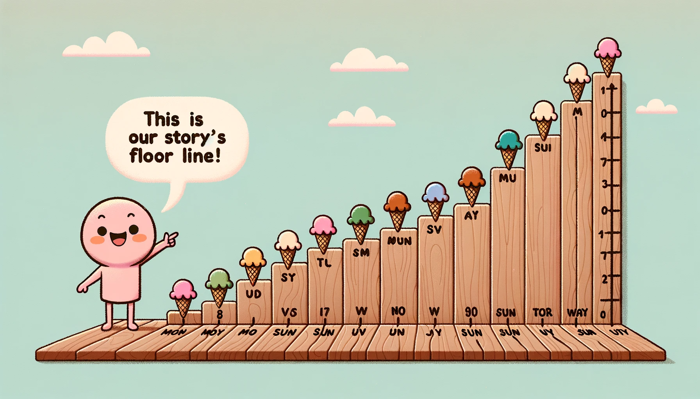

Think of the X-axis as the floor line of our graph's story. It's that line at the bottom that goes from left to right. It can tell us things like what days we're looking at or even which of our favorite movies we're comparing. It can be used to show both dimensions and measures. So, if we're tracking how many ice creams we eat over a week, the X-axis would have the days (like Monday, Tuesday, and so on), and another line (the Y-axis) would tell us how many ice creams we had!
The Y-axis is like the measuring stick of our graph's story. It stands tall, going up and down on the left side. If we think about our ice cream example, the Y-axis shows us how many ice creams we've eaten. So, if the number 5 is on the Y-axis, that means we had 5 ice creams that day!
Imagine if our graph could pop out like a 3D movie! üçø That's where the Z-axis comes in. It's like a lift that goes up and down, giving our graph an extra layer of depth. It's super cool and helps us see things in 3D when there's a lot to look at!
Ever looked at a treasure map? üó∫Ô∏è Regional analysis is like that, but with data! It places data on geographical maps, helping us see patterns and stories tied to places. Like finding out which city loves pizza the most or where more people ride bicycles!
Bubble charts are unique as they use circles of varying sizes and colors to represent data. This type of chart is useful when you want to visualize large volumes of complex data.
A treemap is a rectangular plot divided into smaller rectangles, representing various data segments. This type of graph is useful for showing hierarchical structures or part-to-whole relationships.